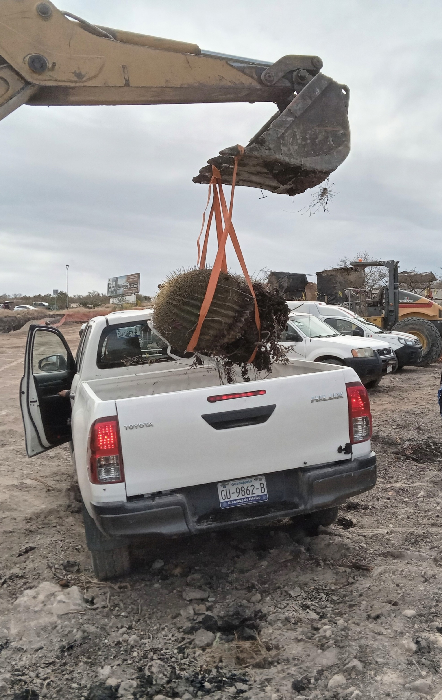
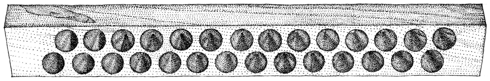

Proyectos Destacados
Conoce algunos de los proyectos en los que he participado.
Profesional
Desde 2020, cuando me recebí como ingenierio, he trabajado en Evaluación y prospección de Impacto Ambiental, Muestreo de Vegetación y Arboricultura.
Ver másAcedémico

Me he mantenido en preparación constante, primero en las Ciencias Forestales y ahora en las Ciencias de Información Geográfica, revisa los trabajos más recientes
Ver másPreprofesional
Antes de terminar la ingeniería, fuí curador del Museo Nacional de Agrícultura y empecé a trabajar en evaluaciones de Impacto Ambiental y prestación de servicios ambientales con Silvicultores Unidos del Occidente de Chihuauha, AARENAZA S.C., entre otros proyectos.
Ver más